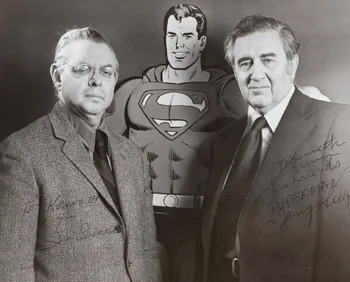

superman fue creado por jerry siegel y joe shuster en 1938 y es uno de los personajes mas famosos y populares en la cultura pop.Es conocido por su traje azul y rojo, su gran S en el pecho y su habilidad para volar y tener super fuerza
El origen de superman cuenta la historia de un bebe que es enviado desde un planeta que esta a punto de ser destruido a la tierra, donde es adoptado por una pareja de granjeros. Con el tiempo, el joven Clark Kent descubre que tiene habilidades sobrehumanas y se convierte en el protector de Metropolis como Superman
Superman posee una variedad de habilidades sobrehumanas, incluyendo super fuerza, velocidad, vision de rayos X, vuelo y una increible resistencia. Tambien es capaz de disparar rayos de calor con sus ojos y congelar objetos con su aliento. Ademas de sus habilidades fisicas, superman tambien tiene un fuerte sentido de la justicia y la moralidad, lo que lo convierte en un defensor incansable de la verdad y la justicia
A lo largo de los años, Superman ha sido objeto de numerosas adaptaciones, inluyendo peliculas, programas de television, series de animacion y comics. Su impacto en la cultura popular en innegable, y ha sido una inspiracion para generaciones de fans de todo el mundo